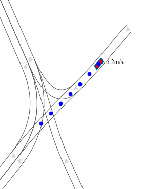
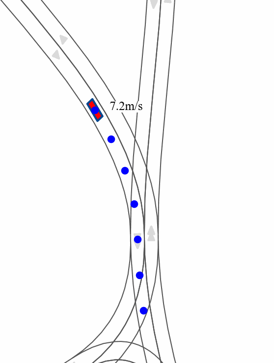
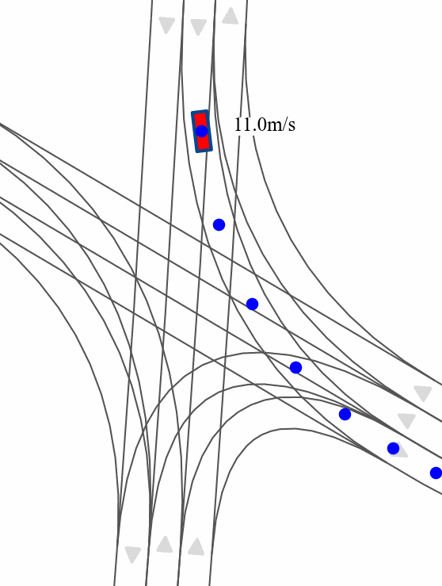
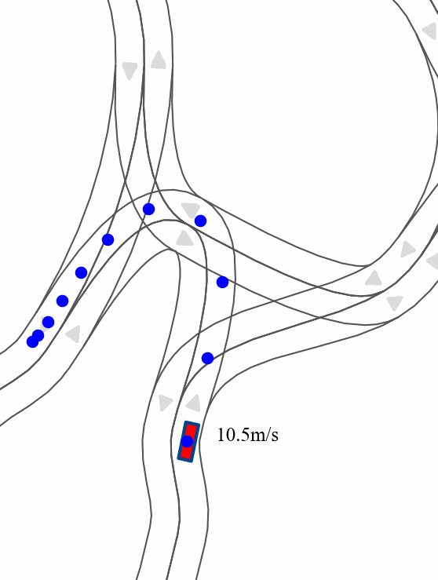

POP: Improving Autonomous Driving Safety with POP: A Framework for Accurate Partially Observed Trajectory Predictions
- Sheng Wang
- Yingbing Chen
- Jie Cheng
- Xiaodong Mei
- Yongkang Song
- Ming Liu
Hong Kong University of Science and Technology, RAM-LAB

GIF 1
GIF 2

GIF 3
GIF 4

GIF 5
GIF 6

GIF 7
GIF 8